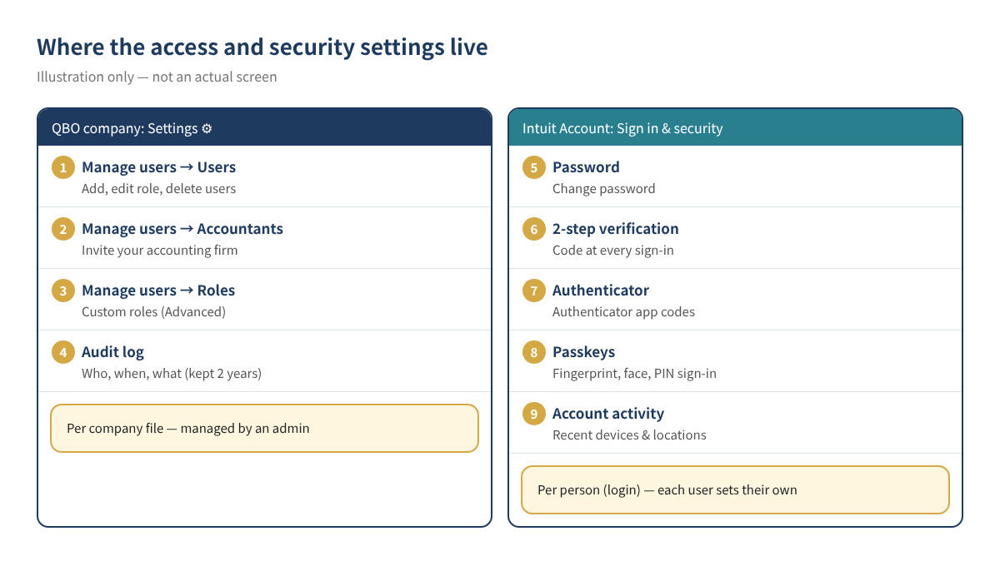
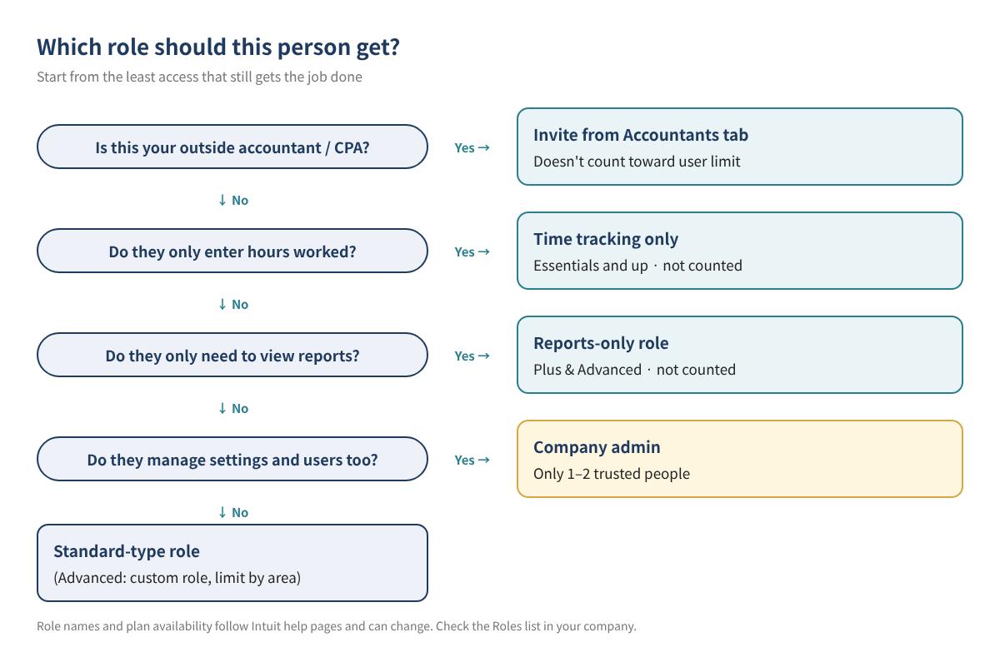
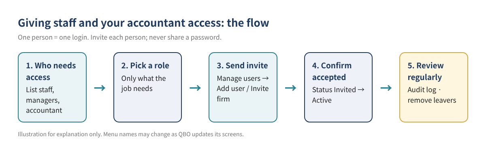
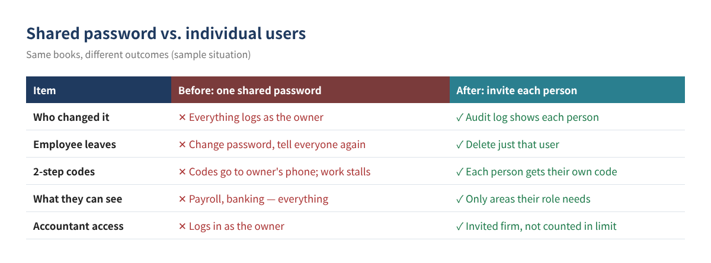

Stop Sharing Your QuickBooks Online Password: Set Up Users, Roles, Accountant Access and 2-Step Verification
Sooner or later, someone besides you needs to get into your QuickBooks Online (QBO) books: a manager who sends invoices, a part-time bookkeeper who enters bills, staff who log their hours, and an accountant at year-end. The quickest fix is to hand out the owner's login. It works for a day, but then every change shows up under your name, you have to reset and redistribute the password whenever someone leaves, and everyone can see payroll and bank details.
This guide walks through the better way: giving each person their own login, choosing a role that matches their job, inviting your accountant without using up a paid seat, and protecting sign-ins with Intuit's 2-step verification and the audit log. It goes deeper than the short overview in the series start post, QuickBooks Online Basics for Beginners.
Who this is for ☐ Owners who have shared their QBO password with staff or family ☐ Anyone worried that adding an accountant will exceed their user limit ☐ Owners who aren't sure how to cut off access when an employee leaves ☐ Teams whose work stalls because sign-in codes only go to the owner's phone
1. The layout: company settings vs. personal sign-in settings
Access and security settings live in two different places. Knowing which is which saves a lot of clicking around.
- QBO company settings: under Settings ⚙ you'll find Manage users and the Audit log. An admin decides who can get into this company file and what they can do there.
- Intuit Account settings: the Sign in & security page of each person's Intuit Account holds the password, 2-step verification, Authenticator, Passkeys and recent account activity. Each person manages their own.

Tip QBO menus move around as Intuit updates its screens. If you can't find a menu, type "Manage users" or "Audit log" into the search bar at the top.
2. Check your plan's user limits first
Each QBO plan allows a set number of billable users. Accountant users, reports-only users and time-tracking-only users don't count toward that limit. The table below reflects Intuit's US usage-limits help article and plan comparison page.
| Plan | Billable users | Accountant users | Time tracking only | Reports only |
|---|---|---|---|---|
| Simple Start | 1 | 2 | Not available | Not available |
| Essentials | 3 | 2 | Unlimited | Not available |
| Plus | 5 | 2 | Unlimited | Unlimited |
| Advanced | 25 | 3 | Unlimited | Unlimited |
Table 1. User limits by plan (per Intuit US help, checked November 2026). Limits and prices change, so confirm on Intuit's pricing page before you choose a plan.
A restaurant on Essentials, for example, could give the owner, a manager and an office assistant full logins and still add every server and cook as a time-tracking-only user. The accountant uses one of the two accountant seats, not a billable one.
3. Picking a role: give only what the job needs
When you add a user, you pick from the Roles dropdown. Each role opens different areas of QBO, and when you select one you can expand the list of features it includes. The rule of thumb: give each person the least access that still lets them do their job.

| Person | Role to consider | Counts toward limit? | Notes |
|---|---|---|---|
| Owner | Primary admin | Yes | Final say over subscription, billing and users |
| Trusted partner or general manager | Company admin | Yes | Can change settings and manage users, so keep this to 1–2 people |
| Office staff entering invoices and expenses | A standard user role (custom role in Advanced) | Yes | Narrow it if they don't need payroll or banking |
| Investor or family member who only reads numbers | Reports-only role | No | Plus and Advanced |
| Hourly staff who only log time | Time tracking only | No | Essentials and up; can't be edited, so delete and re-add to change |
| Outside accountant or CPA | Invite from the Accountants tab | No | Gets accountant tools to review and correct the books |
Table 2. Sample role assignments (sample values). Actual role names vary by plan and change over time, so check the Roles dropdown in your own company.
Custom roles in Advanced
QBO Advanced lets you build your own roles. Go to Settings ⚙ → Manage users → Roles tab → Add role, give it a name and description, choose what it can do in each area, and save. According to Intuit, you can set permissions by area, including Sales, Expenses, Inventory, Lists, Bookkeeping, Accounting, Payroll, Reports and Account Management, at levels such as view, create, edit, delete and approve. Sales can also be limited by location, which helps if each store manager should only see their own store's sales.
4. Adding a user, step by step

- Open Settings ⚙ → Manage users (or search for "Manage users").
- Select Add user and enter the person's name and email. Names can't contain special characters other than a period; emails can only use a period and @.
- Choose a role from the Roles dropdown and read through the expanded feature list to confirm it fits.
- If the role allows it, decide whether to grant Account management options. Staff who don't need to see the subscription or billing shouldn't get them.
- Select Send invitation. The person clicks "Let's go!" in the email, then creates an Intuit Account or signs in with an existing one.
- If they can't find the email, you can resend the invite from Manage users.
Tip One shared mailbox (say, office@...) used by several people causes the same problems as a shared password. Invite each person at their own email address.
Changing a role and removing someone who leaves
- Change a role: in Manage users, select Edit in the Action column, change the role, and save. The person has to sign out and back in to see the change.
- Delete a user: select the ⋯ icon on their row → Delete → confirm. Deletion is permanent, but their past activity stays in the audit log.
- Same-day offboarding: make it a rule to remove access on someone's last day, and sooner if they had banking or payment access.
- Changing the primary admin: handing over the owner role has its own procedure. Check Intuit's help article on changing the primary admin for the current steps before you start.
5. Inviting your accountant without using a paid seat
Don't add your accountant as a regular user. Invite them into an accountant seat instead. Intuit says accountants invited this way don't count toward your subscription's user limit. Only a primary admin or company admin can send the invite.
- Go to Settings ⚙ → Manage users.
- Open the Accountants (or Accounting Firms) tab.
- Select Invite firm and enter your accountant's email or the firm's user ID.
- Send the invitation. Once your accountant accepts, the status changes from Invited to Active.
Accountant users get accountant tools for reviewing and correcting the books. Because accountants may reclassify a lot at year-end, use the audit log (below) if you want to see what changed. If you're still moving data over, see QuickBooks Desktop to Online migration.
6. Protect the sign-in itself with 2-step verification
Well-designed roles won't help if a password leaks. Intuit Accounts have two layers of protection.
| Layer | When it asks for a code | Can you turn it off? |
|---|---|---|
| Multi-factor authentication (MFA) | One-time code by email or phone when you sign in from an unrecognized device | No, it's always on |
| 2-step verification | When turned on, a code at every sign-in on any device | Yes, it's opt-in |
Table 3. MFA vs. 2-step verification (per Intuit Account help).
Turning on 2-step verification
- Sign in to your Intuit Account (accounts.intuit.com) and open Sign in & security.
- In the 2-step verification section, select Turn on, then Set up.
- Confirm your phone number and choose to get the code by text or voice message.
- Enter the code and your account password. You'll get a confirmation email when it's on.
- Authenticator app: under Sign in & security → Authenticator, you can link an app such as Google Authenticator or Microsoft Authenticator. App codes work even offline.
- Passkeys: sign in with a fingerprint, face recognition or device PIN.
- Account activity: the same page shows recent devices and locations. If you see one you don't recognize, change your password right away.
Watch out Changing the phone number on your Intuit Account automatically turns off 2-step verification. Turn it back on with the new number. Turning off 2-step verification also disables the authenticator.
This is one more reason to give everyone their own login. With a shared password, codes go only to the owner's phone and staff are stuck whenever the owner is busy. With individual logins, each person gets their own code.

7. Use the audit log to see who changed what
- Open it: Settings ⚙ → Audit log → Filter, then choose User, Date or Events and apply. You need admin access to see it.
- What it records: the date of each change, who made it and the original transaction details, plus sign-ins, settings changes and edits to customers, vendors and employees.
- How long: events stay available for 2 years and show 150 records at a time. The audit log can't be turned off.
- One transaction's history: open the transaction and select More actions → Audit history to see who changed what and when. Compare shows the versions side by side.
- Sign-outs: these are only logged when someone selects Sign out, not when a browser closes or a session times out.
The audit log is also the fastest way to find out who entered a transaction twice when a bank balance won't tie out. See Find duplicate transactions and reconciliation differences.
8. Worked example: a Las Vegas bakery
Take a made-up bakery, "Sunrise Bakery" (Las Vegas, QBO Plus, nine employees). Until now the manager and office assistant shared the owner's login.
| Person (fictional) | Job | Role | Billable seat |
|---|---|---|---|
| Owner | Runs everything, pays the bill | Primary admin | 1 |
| General manager | Invoices, expenses, approves hours | Standard user role | 1 |
| Part-time office assistant | Enters bills, attaches receipts | Standard user role (narrowed) | 1 |
| Silent partner | Reviews monthly P&L only | Reports-only role | 0 |
| 5 front and kitchen staff | Log hours | Time tracking only | 0 |
| Outside accountant | Quarterly review, year-end adjustments | Invited from Accountants tab | 0 (1 of 2 accountant seats) |
| Total | 3 of 5 billable seats |
Table 4. Sample user setup (sample values, fictional business).
After the change, more than ten people have their own logins while only three of five paid seats are used. The owner asks every billable user to turn on 2-step verification, and once a month filters the audit log by user to look for anything unusual. When the office assistant leaves, the owner deletes the user that day; everything the assistant entered is still traceable in the audit log.
9. Common mistakes
- Sharing the owner's password, so every change in the audit log shows the owner's name
- Adding the accountant as a regular user and burning a paid seat (the Accountants tab doesn't count toward the limit)
- Making everyone a company admin, so anyone can add or delete users
- Leaving former employees' logins active for months
- Changing a phone number and not realizing 2-step verification turned off
- Changing someone's role and assuming it failed because they never signed out and back in
10. FAQ
Q. What if I need more than two accountants?
Simple Start, Essentials and Plus allow 2 accountant users and Advanced allows 3, per Intuit's usage-limits article. Intuit suggests considering Advanced if you need more than two accounting firms.
Q. Can I keep staff from seeing payroll?
Yes. Choose a role without payroll access. For finer control by area, an Advanced custom role can exclude Payroll.
Q. If I delete a user, do their transactions disappear?
No. Their transactions stay in the books, and their activity remains visible in the audit log.
Q. Can I force employees to use 2-step verification?
2-step verification is an opt-in setting on each person's Intuit Account, so make it a company rule and ask staff to turn it on. Standard MFA applies to every account and can't be turned off.
Q. What if I need audit history older than two years?
Intuit says audit log events are available for 2 years. If you need longer records, export reports periodically and keep them yourself.
11. Self-check list
- ☐ I know my plan's billable user limit and how many seats are in use
- ☐ Everyone who used my password now has their own login
- ☐ Each role is limited to what that person actually needs
- ☐ Company admin is limited to 1–2 people
- ☐ My accountant was invited from the Accountants tab and shows Active
- ☐ Every billable user has 2-step verification or an authenticator app on
- ☐ I have a rule for removing access on an employee's last day
- ☐ I filter the audit log by user once a month
Related posts
- QuickBooks Online Basics: 10 Things to Know When You Start
- Getting Started in QBO: Opening Balances and Chart of Accounts Setup
- Chart of Accounts Examples by Industry
- Import Customers, Vendors and Products from Excel
- Find Duplicate Transactions and Reconciliation Differences
This post is general educational information, not tax, legal or financial advice. The businesses and people in the examples are fictional and the figures are for illustration. QuickBooks Online screens, menu names, plans, prices and user limits change often, so check the current screens and Intuit's official help before making changes.
QuickBooks is a registered trademark of Intuit Inc.; not affiliated with or endorsed by Intuit.
Sources
- Add and manage users (Intuit, US)
- Learn about usage limits in QuickBooks Online (Intuit, US)
- Add and manage custom roles in QuickBooks Online Advanced (Intuit, US)
- QuickBooks pricing — plan comparison (Intuit)
- Invite accountant users to your QuickBooks Online company (Intuit, US)
- Use the audit log in QuickBooks Online (Intuit, US)
- View transaction changes in the audit history (Intuit, US)
- Update your Intuit account's security settings (Intuit, US)
- Secure your Intuit Account and prevent lockout with extra verification methods (Intuit)